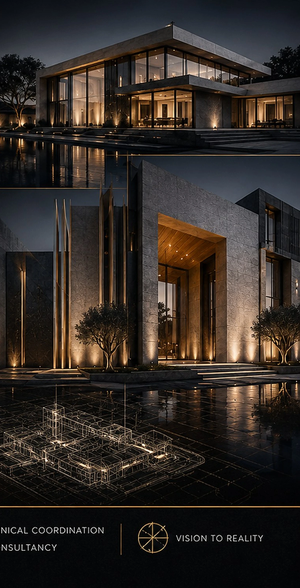

BADR Atelier works with developers before the first line is drawn — aligning site potential, market logic, product identity, architecture and BIM so every square metre carries a reason to exist.

A developer does not need another drawing. A developer needs a better decision.
Our role is to connect commercial ambition with architectural quality.
Efficiency, product-market fit, phasing, cost awareness and commercial clarity.
A distinctive product people understand, desire and remember.
Places that improve experience, community, identity and long-term relevance.
Different markets. One design discipline.
The BADR portfolio spans residential, religious, retail, mixed-use, hospitality, civic and commercial design.


Local roots. International project language.
BADR Atelier is headquartered in Badr City, Cairo, with portfolio reach represented across multiple regions.


The design promise must survive technical reality.
Architecture, structure and MEP are developed as one coordinated information environment.
Explore BIM projects
At BADR Atelier, we believe real-estate development should not stop at profit.
Our partnership with the developer starts with listening to the land, market, brief and ambition.
Our design philosophy: purpose, place, people, light and disciplined detail.
Bring us the land before you bring us the brief.
We can help define what the project should become.